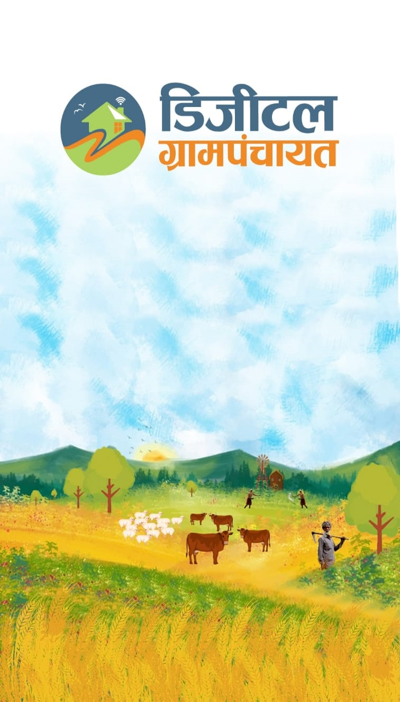

Digital Grampanchayat
Digital Grampanchayat प्रकल्प ग्रामपंचायतींच्या डिजिटल रूपांतरणासाठी तयार केला आहे. या पेजवर तुम्हाला प्रकल्पाची मुख्य सेवा आणि उद्दिष्टे स्पष्टपणे सापडतील.

Download Project PDFLoading content...
Digital Grampanchayat प्रकल्प ग्रामपंचायतींच्या डिजिटल रूपांतरणासाठी तयार केला आहे. या पेजवर तुम्हाला प्रकल्पाची मुख्य सेवा आणि उद्दिष्टे स्पष्टपणे सापडतील.

Download Project PDFLoading content...